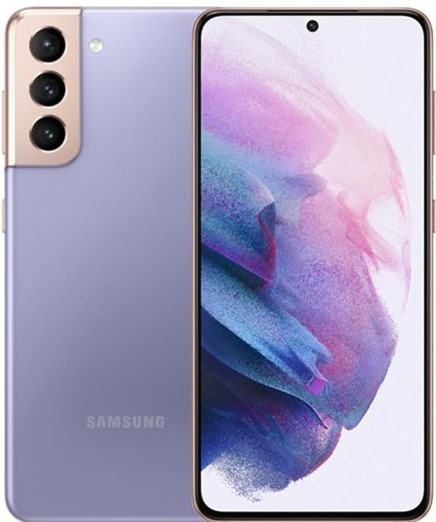
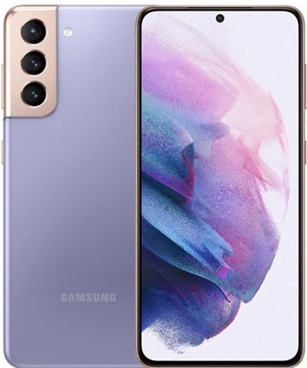

소프트웨어의 호환성이 높고, 전화가 가능한 휴대 전화와 컴퓨팅 기능을 하나로 통합한 모바일 장치다.
스마트폰은 표준화된 인터페이스와 플랫폼을 기반한 운영 체제로 종합 구성한 전화통신기기로 볼 수 있으며
스마트폰은 전자 우편, 인터넷 검색, 텍스트 읽고, 쓰고 저장하기, 추가적인 앱설치로, 응용기기로의 기능을 사용할 수 있고
내장형 키보드나 외장 USB 키보드, 외부 출력 가능한 VGA 단자, HDMI 단자로 확장기기가 연결되는 소형 컴퓨터로도 사용할 수 있다.
또한, 무선 인터넷 접속기능을 이용하여 인터넷 및 인트라넷에 직접 접속할 수 있을 뿐만 아니라 그룹웨어로의 연동이 가능하다.
 
